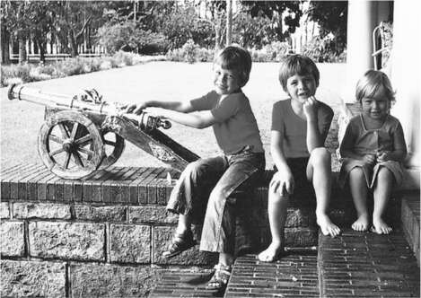
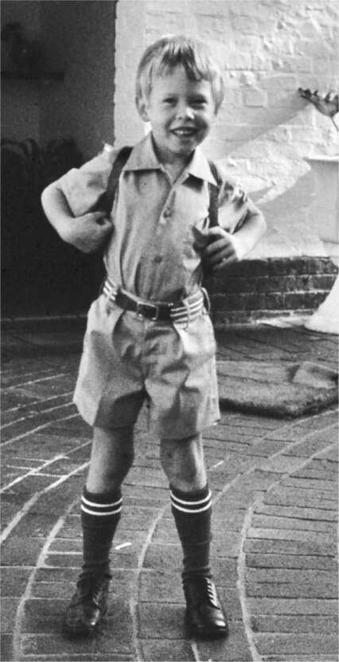

2 Một Tâm Trí Riêng Pretoria,
Một Tâm Trí Riêng Pretoria, những năm 1970

Elon và Maye Musk

Elon, Kimbal và Tosca.
*
Cô đơn và quyết tâm
Vào 7:30 sáng ngày 28 tháng 6 năm 1971, Maye Musk sinh một bé trai nặng 3,6 kg, với cái đầu rất to.
Lúc đầu, bà và Errol định đặt tên con là Nice, theo tên thị trấn ở Pháp nơi cậu bé được thụ thai. Lịch sử có thể đã khác, hoặc ít nhất là thú vị hơn, nếu cậu bé phải sống với cái tên Nice Musk. Thay vào đó, với hy vọng làm hài lòng gia đình Haldeman, Errol đồng ý rằng cậu bé sẽ mang tên từ phía gia đình đó: Elon, theo tên ông ngoại của Maye là J. Elon Haldeman, và Reeve, tên thời con gái của bà ngoại Maye.
Errol thích cái tên Elon vì nó mang ý nghĩa Kinh Thánh, và sau này ông tuyên bố rằng mình đã nhìn thấy trước tương lai. Ông nói rằng khi còn nhỏ, ông đã nghe về một cuốn sách khoa học viễn tưởng của nhà khoa học tên lửa Wernher von Braun có tên Dự án Sao Hỏa, mô tả một thuộc địa trên hành tinh này do một giám đốc điều hành được gọi là “Elon” quản lý.
Elon khóc rất nhiều, ăn rất nhiều và ngủ rất ít. Có lúc, bà Maye quyết định để mặc cậu bé khóc đến khi tự ngủ thiếp đi, nhưng bà đã đổi ý sau khi hàng xóm gọi cảnh sát. Tâm trạng của cậu bé thay đổi rất nhanh; lúc không khóc, mẹ cậu kể, Elon rất ngoan.
Trong hai năm tiếp theo, bà Maye sinh thêm hai người con, Kimbal và Tosca. Bà không nuông chiều các con. Chúng được tự do vui chơi. Nhà không có vú em, chỉ có một người giúp việc ít để ý khi Elon bắt đầu nghịch ngợm với tên lửa và chất nổ. Elon nói cậu ngạc nhiên vì đã trải qua thời thơ ấu mà vẫn còn nguyên vẹn cả mười ngón tay.
Khi Elon lên ba, mẹ cậu quyết định cho cậu đi học mẫu giáo vì thấy con trai quá ham học hỏi. Cô hiệu trưởng đã cố gắng can ngăn, chỉ ra rằng việc nhỏ tuổi hơn các bạn trong lớp sẽ gây ra những khó khăn về giao tiếp. Họ nên đợi thêm một năm nữa. "Tôi không thể làm thế", bà Maye nói. "Con tôi cần người khác ngoài tôi để trò chuyện. Thằng bé thực sự là một đứa trẻ thiên tài." Bà Maye đã thuyết phục được cô hiệu trưởng.
Đó là một sai lầm. Elon không có bạn bè, và đến năm lớp hai, cậu bắt đầu lơ đãng. "Cô giáo đến gần và quát mắng tôi, nhưng tôi chẳng nhìn hay nghe thấy gì cả", Elon kể. Bố mẹ cậu được mời đến gặp hiệu trưởng, và bà nói với họ: "Chúng tôi có lý do để tin rằng Elon bị chậm phát triển". Một trong những giáo viên của Elon giải thích rằng cậu bé dành phần lớn thời gian trong trạng thái như người mất hồn, không lắng nghe. "Nó cứ nhìn ra ngoài cửa sổ, và khi tôi bảo nó chú ý, nó nói: 'Lá đang chuyển sang màu nâu rồi'". Ông Errol đáp lại rằng Elon nói đúng, lá đang chuyển sang màu nâu.
Bế tắc được giải quyết khi bố mẹ Elon đồng ý cho cậu đi kiểm tra thính lực, như thể đó là vấn đề. "Họ cho rằng đó là vấn đề về tai, nên họ đã cắt amidan cho tôi", Elon nói. Điều đó làm dịu đi các giáo viên, nhưng không thay đổi được xu hướng "đơ ra" và chìm vào thế giới riêng của cậu khi suy nghĩ. "Từ khi còn nhỏ, nếu tôi bắt đầu nghĩ về điều gì đó khó khăn, thì tất cả các giác quan của tôi đều tắt", Elon nói. "Tôi không thể nhìn, nghe hay bất cứ thứ gì. Tôi đang dùng não để tính toán, chứ không phải để tiếp nhận thông tin". Những đứa trẻ khác sẽ nhảy lên nhảy xuống và vẫy tay trước mặt cậu để xem liệu chúng có thể kéo sự chú ý của cậu trở lại hay không. Nhưng không hiệu quả. "Tốt nhất là đừng cố gắng xen vào khi nó có ánh mắt trống rỗng đó", mẹ cậu nói.
Làm trầm trọng thêm các vấn đề xã hội của Elon là việc cậu không sẵn lòng lịch sự chịu đựng những người mà cậu cho là ngu ngốc. Cậu thường dùng từ "ngu ngốc". "Từ khi bắt đầu đi học, nó trở nên rất cô đơn và buồn bã", mẹ cậu nói. "Kimbal và Tosca kết bạn ngay ngày đầu tiên và dẫn bạn về nhà, nhưng Elon chưa bao giờ dẫn bạn về nhà. Nó muốn có bạn, nhưng nó không biết cách".
Kết quả là cậu bé rất cô đơn, và nỗi đau đó vẫn in sâu trong tâm hồn cậu. "Khi còn nhỏ, có một điều tôi đã nói", Elon nhớ lại trong một cuộc phỏng vấn với Rolling Stone trong giai đoạn sóng gió trong chuyện tình cảm của mình vào năm 2017. "'Tôi không bao giờ muốn cô đơn.' Đó là điều tôi muốn nói. 'Tôi không muốn cô đơn.'"
Năm lên năm, trong một buổi tiệc sinh nhật của người anh họ, Elon bị phạt vì đánh nhau và phải ở nhà. Là một đứa trẻ vô cùng quyết tâm, cậu bé quyết định tự đi bộ đến nhà anh họ. Vấn đề là nhà anh họ ở tận bên kia Pretoria, mất gần hai tiếng đi bộ. Hơn nữa, cậu còn quá nhỏ để đọc được biển báo đường. “Tôi nhớ mang máng đường đi vì đã nhìn thấy khi ngồi trên ô tô, và tôi quyết tâm phải đến đó, nên tôi cứ thế đi bộ,” anh kể. Cậu đến nơi đúng lúc bữa tiệc sắp tàn. Khi thấy con trai đang đi bộ về phía mình, mẹ cậu đã vô cùng hoảng hốt. Sợ bị phạt thêm lần nữa, cậu bé trèo lên cây phong và nhất quyết không chịu xuống. Kimbal nhớ lại cảnh mình đứng dưới gốc cây, nhìn anh trai với vẻ thán phục. “Anh ấy có một quyết tâm mãnh liệt đến kinh ngạc, đôi khi còn đáng sợ, và đến giờ vẫn vậy.”
Lên tám, cậu bé dồn hết quyết tâm để có được một chiếc xe máy. Đúng vậy, tám tuổi. Cậu bé thường đứng cạnh ghế bố và nài nỉ hết lần này đến lần khác. Khi bố cầm tờ báo lên và bảo cậu im lặng, Elon vẫn tiếp tục đứng đó. “Thật phi thường khi chứng kiến cảnh tượng đó,” Kimbal nói. “Anh ấy sẽ im lặng đứng đó, rồi lại tiếp tục tranh luận, rồi lại im lặng.” Điều này diễn ra hàng tuần, mỗi tối. Cuối cùng, bố cậu cũng xiêu lòng và mua cho Elon một chiếc Yamaha 50cc màu xanh vàng.
Elon cũng có xu hướng mơ mộng và lang thang một mình, không để ý đến những người xung quanh. Trong một chuyến du lịch gia đình đến Liverpool thăm họ hàng khi cậu tám tuổi, bố mẹ để cậu và em trai chơi một mình trong công viên. Bản tính cậu không chịu ngồi yên một chỗ, nên cậu bắt đầu lang thang trên đường phố. “Một đứa trẻ thấy tôi đang khóc và đưa tôi đến chỗ mẹ của nó, người đã cho tôi sữa và bánh quy rồi gọi cảnh sát,” anh nhớ lại. Khi được đoàn tụ với bố mẹ tại đồn cảnh sát, cậu bé không hề hay biết có chuyện gì không ổn.
“Thật điên rồ khi để tôi và em trai tôi ở một mình trong công viên ở độ tuổi đó,” anh nói, “nhưng bố mẹ tôi không quá bao bọc như các bậc cha mẹ ngày nay.” Nhiều năm sau, tôi thấy anh tại một công trường xây dựng mái nhà năng lượng mặt trời cùng cậu con trai hai tuổi, được gọi là X. Lúc đó là 10 giờ tối, xe nâng và các thiết bị di chuyển khác được chiếu sáng bởi hai đèn pha tạo ra những bóng lớn. Musk đặt X xuống đất để cậu bé tự khám phá, và cậu bé đã làm điều đó mà không hề sợ hãi. Khi cậu bé loay hoay giữa dây điện và cáp, Musk thỉnh thoảng liếc nhìn nhưng không can thiệp. Cuối cùng, sau khi X bắt đầu leo lên một đèn pha đang di chuyển, Musk mới bước tới và bế cậu bé lên. X vùng vẫy và kêu ré lên, không hài lòng vì bị giữ lại.
Musk sau này sẽ nói về - thậm chí còn nói đùa về - việc mắc chứng Asperger, một tên gọi phổ biến của một dạng rối loạn phổ tự kỷ có thể ảnh hưởng đến các kỹ năng xã hội, các mối quan hệ, khả năng kết nối cảm xúc và khả năng tự điều chỉnh của một người. “Anh ấy chưa bao giờ thực sự được chẩn đoán khi còn nhỏ,” mẹ anh nói, “nhưng anh ấy nói rằng anh ấy mắc chứng Asperger, và tôi chắc chắn anh ấy đúng.” Tình trạng này càng trầm trọng hơn bởi những tổn thương thời thơ ấu của anh. Người bạn thân Antonio Gracias nói rằng bất cứ khi nào cảm thấy bị bắt nạt hoặc bị đe dọa, chứng rối loạn căng thẳng hậu sang chấn từ thời thơ ấu của anh sẽ chiếm quyền hệ thống limbic, phần não kiểm soát phản ứng cảm xúc.
Kết quả là, anh ấy rất kém trong việc nắm bắt các tín hiệu xã hội. “Tôi hiểu theo nghĩa đen những gì mọi người nói,” anh nói, “và chỉ bằng cách đọc sách, tôi mới bắt đầu học được rằng mọi người không phải lúc nào cũng nói những gì họ thực sự muốn nói.” Anh ấy thích những thứ chính xác hơn, chẳng hạn như kỹ thuật, vật lý và lập trình.
Giống như mọi đặc điểm tâm lý khác, tính cách của Musk khá phức tạp và đặc thù. Anh ấy có thể rất tình cảm, đặc biệt là với các con, và anh ấy cảm nhận rất rõ nỗi lo lắng khi cô đơn. Nhưng anh ấy lại thiếu đi sự nhạy cảm thường tình, sự ấm áp và mong muốn được yêu mến. Anh ấy dường như không có sự đồng cảm. Hay nói một cách đơn giản hơn, anh ta có thể là một kẻ khó chịu.
Cuộc ly hôn
Maye và Errol Musk đang dự lễ hội Oktoberfest cùng ba cặp đôi khác, uống bia và vui vẻ, thì một người đàn ông ở bàn bên cạnh huýt sáo với Maye và gọi bà là người phụ nữ quyến rũ. Errol rất tức giận, nhưng không phải với người đàn ông kia. Theo lời Maye nhớ lại, ông ta lao tới định đánh bà, và một người bạn đã phải can ngăn. Bà chạy đến nhà mẹ mình. "Qua thời gian, ông ấy ngày càng trở nên điên rồ hơn", Maye sau này kể lại. "Ông ấy đánh tôi ngay cả khi bọn trẻ ở bên cạnh. Tôi nhớ Elon, khi đó mới năm tuổi, đã đánh vào phía sau đầu gối của ông ấy để cố gắng ngăn cản".
Errol gọi những lời buộc tội đó là "hoàn toàn vô lý". Ông ta tuyên bố mình rất yêu Maye, và trong nhiều năm đã cố gắng níu kéo bà. "Tôi chưa bao giờ động tay động chân với bất kỳ người phụ nữ nào trong đời, và chắc chắn là không có người vợ nào của tôi cả", ông ta nói. "Đó là một trong những vũ khí của phụ nữ, là khóc lóc rằng người đàn ông đã bạo hành họ, khóc lóc và nói dối. Còn vũ khí của đàn ông là tiền bạc và quyền lực".
Sáng hôm sau vụ ồn ào ở Oktoberfest, Errol đến nhà mẹ của Maye, xin lỗi và yêu cầu Maye quay lại. "Đừng bao giờ dám động vào cô ấy nữa", Winnifred Haldeman nói. "Nếu anh làm vậy, cô ấy sẽ đến sống với tôi". Maye nói rằng ông ta không bao giờ đánh bà sau đó, nhưng những lời lẽ lăng mạ vẫn tiếp diễn. Ông ta thường nói với bà rằng bà "nhàm chán, ngu ngốc và xấu xí". Cuộc hôn nhân không bao giờ hàn gắn được nữa. Errol sau này thừa nhận đó là lỗi của mình. "Tôi có một người vợ rất xinh đẹp, nhưng luôn có những cô gái trẻ đẹp hơn", ông ta nói. "Tôi thực sự yêu Maye, nhưng tôi đã phá hỏng tất cả". Họ ly hôn khi Elon tám tuổi.
Maye và các con chuyển đến một ngôi nhà ven biển gần Durban, cách khu vực Pretoria-Johannesburg khoảng 620 km về phía nam, nơi bà làm đủ nghề, từ người mẫu đến chuyên gia dinh dưỡng. Tiền bạc rất eo hẹp. Bà mua sách và đồng phục cũ cho các con. Vào một số ngày cuối tuần và ngày lễ, các con trai (thường thì không có Tosca) sẽ đi tàu đến Pretoria để thăm cha. "Ông ấy gửi chúng về mà không có quần áo hay túi xách, vì vậy tôi phải mua quần áo mới cho chúng mỗi lần", bà nói. "Ông ấy nói rằng cuối cùng tôi sẽ quay lại với ông ấy, vì tôi sẽ rất nghèo khổ và không thể nuôi nổi chúng".
Thường thì bà phải đi làm người mẫu hoặc thuyết trình về dinh dưỡng, để các con ở nhà. "Tôi chưa bao giờ cảm thấy tội lỗi về việc làm việc toàn thời gian, vì tôi không có sự lựa chọn nào khác", bà nói. "Các con tôi phải tự chịu trách nhiệm cho bản thân". Sự tự do đó đã dạy chúng tự lập. Khi chúng gặp vấn đề, bà luôn có một câu trả lời quen thuộc: "Con sẽ tự tìm ra cách giải quyết thôi". Kimbal nhớ lại: "Mẹ không phải là người dịu dàng và âu yếm, và bà luôn bận rộn với công việc, nhưng đó là một món quà cho chúng tôi".
Elon trở thành một "cú đêm", thức đọc sách đến tận sáng. Khi thấy đèn phòng mẹ bật lên lúc 6 giờ sáng, cậu mới lẻn vào giường ngủ. Điều này khiến bà Maye khó đánh thức cậu dậy đi học đúng giờ, và những đêm bà vắng nhà, đôi khi Elon đến lớp tận 10 giờ sáng. Sau khi nhận được điện thoại từ trường, Errol đã khởi kiện giành quyền nuôi con và gửi trát hầu tòa cho giáo viên của Elon, người đại diện của Maye và cả hàng xóm. Ngay trước khi phiên tòa diễn ra, Errol lại rút đơn. Cứ vài năm, ông lại làm như vậy, khởi kiện rồi lại thôi. Khi Tosca kể lại những câu chuyện này, cô bắt đầu khóc. “Tôi nhớ mẹ chỉ ngồi đó, khóc nức nở trên ghế sofa. Tôi không biết phải làm gì. Tất cả những gì tôi có thể làm là ôm mẹ.”
Maye và Errol đều bị cuốn hút bởi những cảm xúc mãnh liệt thay vì hạnh phúc gia đình, một đặc điểm mà họ truyền lại cho con cái. Sau khi ly hôn, Maye bắt đầu hẹn hò với một người đàn ông vũ phu khác. Bọn trẻ ghét ông ta và thỉnh thoảng bỏ pháo nhỏ vào điếu thuốc của ông ta, chúng sẽ nổ khi ông ta châm lửa. Ngay sau khi người đàn ông này cầu hôn, ông ta lại làm một người phụ nữ khác có thai. “Cô ấy từng là bạn của tôi,” Maye nói. “Chúng tôi từng làm người mẫu cùng nhau.”

Elon, Kimbal và Tosca

Elon sẵn sàng đến trường